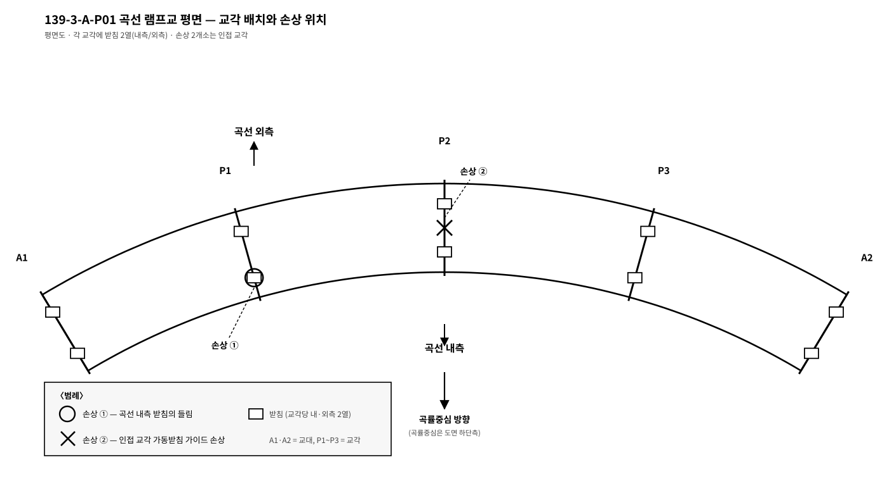
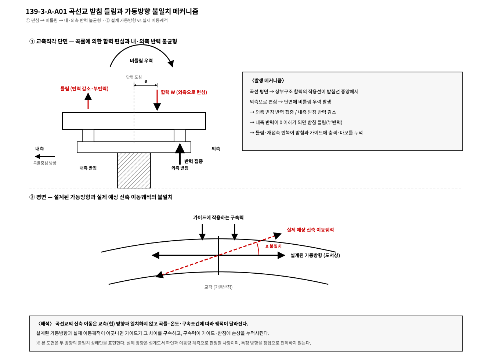

곡선교 받침 — 공용 중 손상의 원인 진단과 개선 배치
공용 중인 곡선 램프교(평면 곡선반경이 작은 연속교)에서 정기점검 결과, 일부 교각의 곡선 내측 받침에서 들림 흔적과 잔류 이격이, 인접 교각의 가동받침 가이드에서 손상과 이동 흔적의 방향 불일치가 관측되었다. ① 각 손상에 대해 발생 가능한 원인을 곡선교의 구조적 특성과 연계하여 추정하는 절차를 제시하고, ② 원인별 개선 대책(받침 재배치·교체 포함)을 설명하시오.

교량공학
제139회 3교시
서술형
난이도 ★★★★☆
모범답안
【핵심 키워드】 내측 들림 = 곡률 편심 비틀림·부반력 / 가이드 손상 = 설계된 가동방향과 실제 신축 이동궤적의 불일치 → 구속력 — 진단 = 반력·이동궤적 해석 재현 → 계측 대조
Ⅰ. 서론 — 곡선교 받침 손상은 개별 부품 열화가 아니라 배치 가정과 실거동의 불일치가 드러난 신호인 경우가 많다. 관측된 두 손상은 곡선교의 3대 특성(비틀림·신축방향·부반력) 중 각각 부반력과 이동방향 문제를 지시하므로, 진단은 이 가설에서 출발하되 계측으로 확증한다.
Ⅱ. 본론
- 손상 A: 내측 받침 들림·잔류 이격 — 원인 추정
- 가설: 자중·활하중 합력의 곡률 편심에 의한 상시 비틀림 → 외측 반력 집중·내측 반력 감소 → 활하중 편재하·온도 조합 시 부반력(들림) 발생. 받침 간격·경간과 곡률의 조합 등은 필수 원인이 아니라 가능한 배경 요인으로 추가 검토한다.
- 진단 절차: ① 준공도서의 받침 배치·설계 반력 확인 → ② 현행 하중조합(편재하·온도 포함) 반력 해석 재현 → ③ 잭업 계측 또는 반력 측정으로 실반력 대조 → ④ 들림 발생 조합·빈도 특정.
- 손상 B: 가동받침 가이드 손상·이동 흔적 방향 불일치 — 원인 추정
- 가설: 설계된 가동방향이 실제 신축 이동궤적과 불일치하여 이동이 구속 → 가이드·앵커에 구속력 → 손상. (곡선교의 적정 가동방향은 고정점 위치·받침 배치·곡률·실제 이동궤적을 종합하여 결정되는 것이므로, 특정 방향을 정답으로 전제하지 않는다.) 다점 고정 또는 고정점 위치 부적절도 동일 증상을 유발할 수 있다.
- 진단 절차: ① 도서에서 고정점 위치와 설계된 가동방향 확인 → ② 해석으로 실제 예상 신축 이동궤적 산정 → ③ 양자의 불일치 여부를 실측 이동 흔적(스크래치 방향)과 함께 대조 → ④ 불일치 시 구속력 크기 추정(하부구조 균열 병행 점검).
- 원인별 개선 대책
| 원인 | 대책 |
|---|---|
| 내측 부반력 | 받침 간격 확대 재배치, 인장 구속(업리프트 방지) 받침 교체, 카운터웨이트, 필요시 지점 강성 조정 |
| 설계 가동방향–실제 이동궤적 불일치 | 해석으로 확인한 이동궤적에 맞춘 가동방향 재설정(받침 교체), 전방향 가동+가이드 재계획 |
| 고정점 부적절 | 고정점 재배치(강성 큰 하부구조로), 수평력 분산장치 검토 |
| 공통 | 교체 시 잭업 계획·단계별 교통 제어, 개선 후 반력·이동량 계측으로 검증 |
Ⅲ. 결론 — 곡선교 받침 손상 진단의 요체는 "해석으로 배치 가정을 재현하고 계측으로 실거동과 대조"하는 것이다. 부품 교체만으로는 재발하며, 반력 불균형과 이동 궤적이라는 원인 구조를 바로잡는 재배치가 근본 대책이다. 개선 후에는 스마트 받침 등 상시 반력 계측으로 배치 가정을 지속 검증함이 바람직하다.
